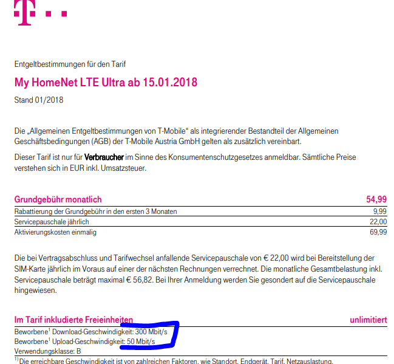

Mit Jänner 2018 sind bei T-Mobile neue Tarife verfügbar (erste Zahl Download- zweite Zahl Uploadrate in Mbit): 30/6 ; 70/14 ; 150/30 ; 300/50 für Neukunden, in meinem Fall 70 ; 150 ; 250 Mibt als Bestandskunde innerhalb der Bindefrist noch vor Mögichkeit zur Vertragsverlängerung. Auf Mein T-Mobile/Mein Servicevertrag/Vertrag und Tarife/Tarif wechseln/Tarif wechseln kann selbst ein Paket Upgrade durchgeführt werden.
LGS
Hallo!
vor 20 Stunden schrieb 5igi3lue:Zu den Paketen die mir für ein Upgrade zur Verfügung stehen finde ich die Upload Geschwindigkeit nicht oder übersehe ich sie?
Meinst du hier den Tarifwechsel oder die Zusatzpakete im Mein T-Mobile? Beim Tarif bekommst du über i die komplette Tarifbeschreibung, wo auch diese Werte draufstehen sollen und bei den Paketen solltest du mit dem Link weitere Details alle notwendigen Informationen ablesen können.
vor 20 Stunden schrieb 5igi3lue:Warum ist das Paket 300/50 nicht auswählbar, gewollt so oder Systemfehler?
Es kommt auf den Ursprungstarif an. In der Regel sollten aber schon alle den 300er zur Verfügung haben.
vor 20 Stunden schrieb 5igi3lue:
- Ist das Upgrade wieder 4 Wochen lang zu testen oder muss ich es behalten, auch wenn das Upgrade technisch nicht umsetzbar ist?
Bei den Zusatzpaketen gibt es derzeit kein kostenloses Testmonat, aber du kannst das Paket monatlich immer kündigen.
LG Phil
Danke für die schnelle Antwort!
In der Tat hab ich das "i" übersehen, da kommt man zu den Entgeltbestimmungen. Darin ist weiters zu lesen, das die Pakete den üblichen Transferraten für Neukunden entspricht. Darin ist auch beim Tarif "My HomeNet LTE Ultra i" von 300 zu 50 Mbit zu lesen.
Womöglich handelt es sich hier nur um einen Tippfehler oder die Verlinkung ist womöglich fehlgeleitet.

Am 26.1.2018 um 21:22 schrieb 5igi3lue:Womöglich handelt es sich hier nur um einen Tippfehler oder die Verlinkung ist womöglich fehlgeleitet.
Das sind noch die "alten" Werte, es ist ein Tippfehler. Bei einem Wechsel oder einer Neuanmeldung in den Ultra sind im Tarif bis zu 300Mbit/s Down und 50 Mbist/s Up enthalten. Die Entgeltbestimmungen sind richtig.
LG Phil
{kind=link}